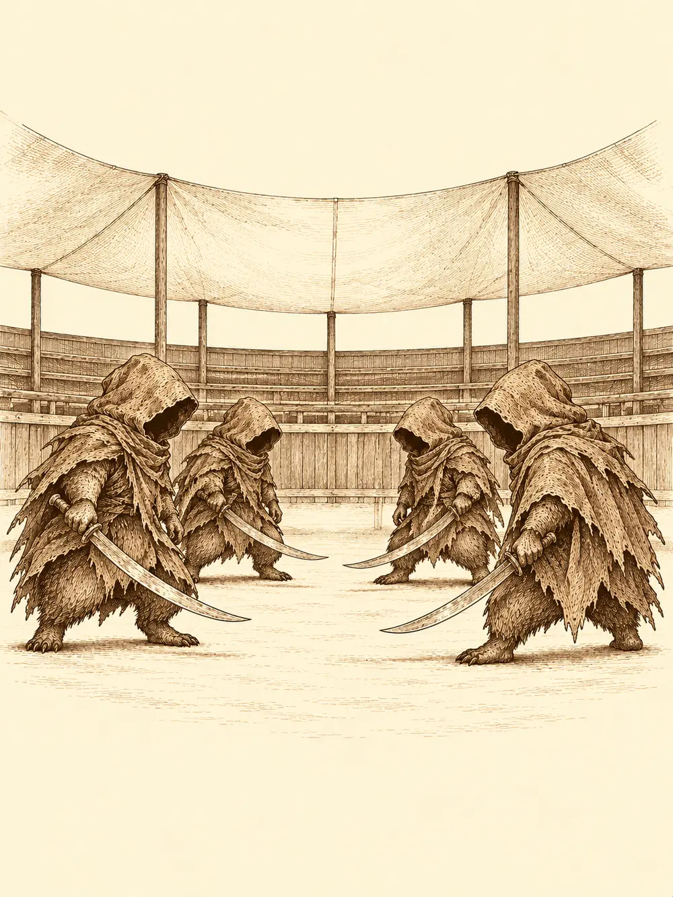

Capítulo 13
El torneo
Libro I · Los cazadores de Ukio
Kitaro llegó a la mesa del desayuno con cuatro jarras en las manos y una sonrisa que le ocupaba toda la cara. Se quitó el delantal, lo tiró encima de una silla y le dijo a Shiro que se ocupara de todo.
"Coged las copas y seguidme. Tengo que enseñaros una cosa".
Shiru se guardó en el bolsillo el pan que estaba compartiendo con el kamaitachi. Lo había ido alimentando aquellos días, él, que para compartir pan era muy suyo, y la comadreja se dejaba. Jin venía de pescar. Hino Yama llevaba días encerrado con sus libros, perfeccionando el fuego. El enano los siguió con el tambor a la espalda.
El tabernero los llevó a la casa de la estufa y bajó por la trampilla. Abajo ya no había nada de lo que recordaban: ni celdas, ni sangre, ni cadenas. Había un pasillo limpio, iluminado con faroles, y a los lados habitaciones con camas y un cofre para cada uno. Una estancia tenía una mesa larga y estanterías con libros de historias. Otra, frascos, alambiques y hornillos para la alquimia. En una sala amplia, con espacio de sobra para hacer ruido, dormía el nekomata sobre un cojín. Y en el lugar donde antes estaba el círculo del ritual había ahora una estancia para los yokai que traían.
"Como siempre estáis trayendo mascotas", dijo Kitaro, "os he preparado un sitio para ellas".
Peluso apareció por una puerta y se puso a ensuciar el suelo nuevo. El kamaitachi dormía tranquilo en un rincón. La puerta de los mil ojos estaba encajada en uno de los marcos y, cuando Kitaro la abrió, los miró a todos con aquellos ojos asustados y se cerró enseguida.
"Suele ser amigable", aseguró el tabernero. "Aunque mire raro".
Alguien preguntó qué habían hecho con los huesos de los yokai que había allí. Kitaro dijo que los habían tirado todos, y el enano puso una cara que el tabernero no entendió.
"Bueno, os dejo. No os olvidéis de que esta tarde es el torneo".
"¿Qué torneo?".
"El torneo de artes marciales. Por parejas. Os inscribo yo, si queréis".
Shiru sacó pecho. Llevaba semanas oxidado y le apetecía que alguien intentara partirle la cabeza. Jin dijo que él iba con el mago, porque era la persona en quien más confiaba, y además no trabajaba con bichos peludos. Quedaron así: Jin con Hino Yama, Shiru con el enano.
Antes del torneo pasaron por la tienda del pescador, que les dio diez monedas a cada uno; aquella semana la pesca había ido bien. Otras semanas podía ir mejor, les explicó, o podía romperse el barco y tocar pagar la reparación entre todos. La esfera de la anciana de los farolillos rojos fue generosa con algunos.
El enano se fue a la herrería cargando el caparazón del kappa gigante.
"Me gustaría que me ayudaras a darle forma a esto".
El herrero lo miró de arriba abajo. Un escudo, quizá. El enano pensaba más bien en una coraza, con los hexágonos del caparazón cortados como escamas sobre el pecho. Le dejó cinco monedas por las molestias. El herrero midió la concha con la mano abierta.
"Déjamela. Te diré algo en una semana o dos".
A mediodía el pueblo entero se vació. Shiro cerró la taberna, el sacerdote salió del templo sonriendo, y todo el mundo caminó hacia un descampado al norte, donde habían levantado una carpa enorme con gradas de madera y un cuadrilátero en el centro. Estaba allí la anciana de los farolillos con dos de sus chicas, el pescador hablando de cómo se corta un pescado, el herrero con el caparazón bajo el brazo, el noble de la casa que habían limpiado, con sus geishas, ya algo achispado a esas horas. Kitaro había montado un tenderete con barriles. Hasta el nekomata se había subido a lo alto de una grada para mirar.
Los participantes eran casi todos gente de armas: samuráis, algún ronin, un sacerdote con el símbolo de un clan distinto del de los monjes del monte, un hombre vestido de negro de pies a cabeza, un shinobi. Y cuatro figuras muy bajitas, encapuchadas, con una cimitarra cada una, que formaban dos parejas. No se les veía la cara. Ganaban sus combates muy deprisa.
Un anunciador con un artefacto que le agrandaba la voz subió a una tarima.
"¡Bienvenidos al torneo de Kuroto! Recordad: artes marciales, sin intención de matar. Y en el primer combate tenemos aquí a un cervatillo llamado Shiru y a un enano llamado...".
Lo que dijo después se perdió entre los gritos. El anunciador se llamaba Sota.
"...¡contra el ronin Hiro y la maga Yusha!".
Shiru sacó músculo para las gradas. El enano levantó la mano para pedir silencio y empezó a tocar el tambor, un redoble lento y grave, y con cada golpe el pecho del cervan se hinchaba al compás. La anciana de los farolillos gritaba la primera.
El ronin se plantó en el centro con la katana preparada para cortar a quien se le acercara. Shiru agarró un puñado de arena y se lo tiró a los ojos. Hiro ni parpadeó. El enano le contó un chiste al oído, y el ronin se dobló de risa y cayó al suelo sin poder parar. Shiru sacó de la mochila un tronco de los que había traído del bosque y se lo partió encima. Volaron astillas por todo el cuadrilátero.
La maga, desde atrás, extendió las manos y soltó un rayo que alcanzó al cervan y se quedó allí, crepitando, un hilo de luz que le quemaba sin descanso. El enano la envolvió en una burbuja de silencio. Shiru agarró al ronin, que seguía riéndose en el suelo, lo levantó por encima de la cabeza y lo lanzó contra ella. Hiro chocó con Yusha y los dos rodaron por el cuadrilátero; el rayo se cortó en seco. La maga intentó lanzar algo con las manos, pero dentro del silencio no le salía ni una palabra.
Shiru siguió con lo que tenía en la mochila: barras de pan, más madera. Al ronin lo dejó sin sentido de un golpe con una hogaza. Yusha miró a su compañero tendido y levantó las manos.
"Me rindo".
Shiru recogió la katana de Hiro, la blandió un momento para las gradas y se la devolvió. Luego le ofreció a la maga un trozo de pan.
El segundo combate de los cazadores fue el de Jin y Hino Yama contra el sacerdote y el shinobi. El mago cubrió al sacerdote de telarañas; Jin pasó a su lado y les prendió fuego con la espada. El shinobi esquivó la red, desapareció en una nube de humo y reapareció junto a Hino Yama, y Jin tuvo que correr hacia él para cubrirlo. Lo tumbó. Pero el sacerdote, envuelto todavía en llamas, alzó la mano y Jin se quedó quieto, rígido, paralizado.

Hino Yama le lanzó al sacerdote tres saetas de luz que no le rompieron la concentración. Luego tres chorros de fuego. El religioso gritó, perdió el hilo, y Jin pudo moverse otra vez.
"Yo intenté avisarte", le dijo el mago.
Jin terminó el combate. Los dos derrotados se levantaron con la cabeza gacha y se fueron comentando en voz baja lo bien que pegaban aquellos dos. Entre combate y combate, los participantes descansaban y recuperaban fuerzas.
Les tocaba la semifinal contra las parejas encapuchadas. Primero, a Shiru y al enano. Las dos figuras bajitas los miraron, se miraron entre ellas, cuchichearon y se acercaron a Sota a decirle algo al oído. El anunciador puso cara rara.
"Pues... se retiran. Damos por ganadores a Shiru y al enano".
El público abucheó. Luego pasó lo mismo con la otra pareja frente a Jin y Hino Yama: llegaron, los miraron, negaron con la cabeza y se fueron.
"Qué extraño", dijo Sota por su artefacto. "Venían de las islas del norte. Parece que tienen miedo de luchar con los cazadores".
La final iba a ser entre ellos cuatro. Shiru no tenía ningún problema en pegarse con sus amigos, dijo, pero aquello olía raro. Jin estaba de acuerdo. Se retiraron los dos equipos. El enano, al irse, le gritó a Sota que luego volvería a por el premio.
"¡Pues no tendremos final! ¡El primer torneo del año sin final!".
Las cuatro figurillas se perdían ya hacia el bosque de Jigoku.
Las siguieron entre los árboles. En un momento dado, una de ellas se separó del grupo y siguió sola. Las otras tres se detuvieron a hablar.
Los cazadores se acercaron en silencio. Hino Yama lanzó una telaraña que las atrapó a las tres, y el enano echó sobre ellas una burbuja de silencio. Allí se quedaron, pegadas a la red, moviendo los labios sin que se oyera nada y agitando las cimitarras contra los hilos. Shiru entró en la burbuja, agarró una capucha y tiró.
Debajo había un tejón. O algo parecido: una criatura de hocico alargado y franjas en la cara, de las que pueden cambiar de forma. Un mujina.
Retiraron el silencio. Los tres empezaron a maldecir en silvano y luego en común.
"¿Por qué nos atrapáis? ¡Malditos cazadores! ¡Ya sabíamos que nos traeríais problemas!".
Hino Yama les preguntó por qué no habían querido luchar, y lo hizo con una bola de fuego en la palma de la mano. El enano se subió a lomos de uno como a un caballo.
"Porque sois malvados".
"¿Malvados, nosotros?".
"Es lo que cuentan en el bosque". Lo contaron los tres a la vez, atropellándose. Que habían cazado y matado a un kamaitachi hacía mucho tiempo. Que habían destrozado a las pobres criaturas que se transforman en objetos. Que habían aniquilado una aldea entera, la de la gente de los cuellos largos.
Alguien les contestó que muchas de aquellas criaturas los habían atacado primero, sin motivo. Que también había humanos que mataban a otros humanos, y no por eso todos los humanos querían matarse.
"Lo que queremos", dijo alguien, "es que los yokai y los humanos vivan juntos".
Los mujina se miraron. Seguían pegados a la telaraña, con un dragón con fuego en la mano delante y un enano encima.
"¿Nos quitáis esto?".
Querían el premio del torneo, una bolsa grande de monedas. Para eso se habían apuntado. Ya no lo iba a tener nadie. Alguien les ofreció otra cosa: comida, un sitio donde dormir y un trabajo. Guardias. Los mujina deliberaron en voz baja.
"Aceptamos", dijo el que parecía el jefe. "Pero demostrad lo que valéis. Un combate de honor. No así, atrapándonos por la espalda con telarañas. Cada bando elige a un campeón".
El enano se ofreció.
Soltaron al jefe. El mujina sacó su cimitarra, dijo "por el honor", y se metió bajo tierra. Dejó un agujero y un montón de tierra removida.
El enano se tumbó en el suelo y empezó a tocar el tambor para que retumbara la tierra, con una daga en la otra mano. Notó un temblor. Vio cómo se levantaba el suelo como cuando pasa un topo. El mujina salió delante de él y el enano le clavó la daga antes de que terminara de asomar.
El tejón chilló y le saltó encima. Le dio un mordisco, luego un zarpazo, luego un tajo con la cimitarra, tres golpes en un parpadeo. Era rápido. El enano le contó algo que lo dejó paralizado, quieto como una estatua, y le quitó la cimitarra de la mano.
"Aquí pueden pasar dos cosas", le dijo. "O te desnudo delante de tus amigos y te humillo, o te rindes".
"¡Me rindo! ¡Me rindo, me rindo, me rindo!".
Le cayó una lágrima. Cuando pudo moverse corrió hacia sus compañeros y se echó a llorar en el hombro de uno.
"Hay que hacerle caso. Ese enano está loco. No le deis nunca la espalda. Me ha dicho cosas muy feas".
El enano le guiñó un ojo y le lanzó un beso. El mujina se escondió detrás de su compañero.
"Bueno", dijo otro. "Trabajaremos para vosotros".
Kitaro los vio llegar con tres tejones bajitos y se le iluminó la cara.
"Tenemos guardias nuevos", le dijeron. "Para proteger el pueblo por la noche".
El tabernero dijo que le parecía bien que se alojaran en la base, y que habría que contárselo al noble. Bajaron por la trampilla. Dos de los mujina se colocaron al pie de la escalera, uno a cada lado, con las cimitarras al hombro, firmes como estatuas. Alguien los llamó Smite y Mike. El enano se puso al lado de uno de ellos y le dijo que a partir de entonces se llamaría Algodón.
"Yo ya tengo nombre".
"Algodón", repitió el enano. Y al otro le puso Pomponcito.
Después el enano volvió al descampado. Estaban desmontando el cuadrilátero. Sota cerraba cajas.
"Vengo a por mi premio".
"No podemos dar el premio a quien se retira".
"Yo nunca dije que me retirara. Fueron el mago y la cabra".
"Pero os marchasteis. El público quería pelea. Si no hay pelea, no hay premio".
El enano le explicó que aquellos encapuchados eran yokai, que podían haber atacado el pueblo, que ellos los habían seguido para protegerlos a todos. Sota se quedó pensativo. Prometió que en el próximo torneo vigilarían mejor a quién dejaban apuntarse. Y le dio, por las molestias, un pase especial para participar en él.
El enano se lo guardó, se colgó el tambor a la espalda y se fue hacia la taberna tocando a paso lento, mientras detrás de él los obreros cargaban las tablas del cuadrilátero en un carro.